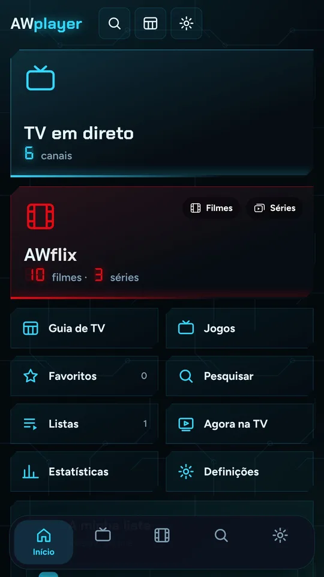
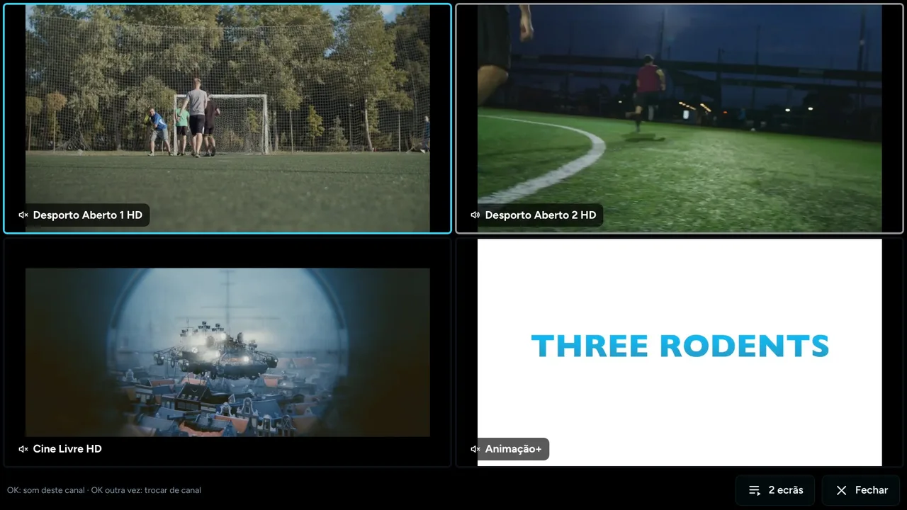
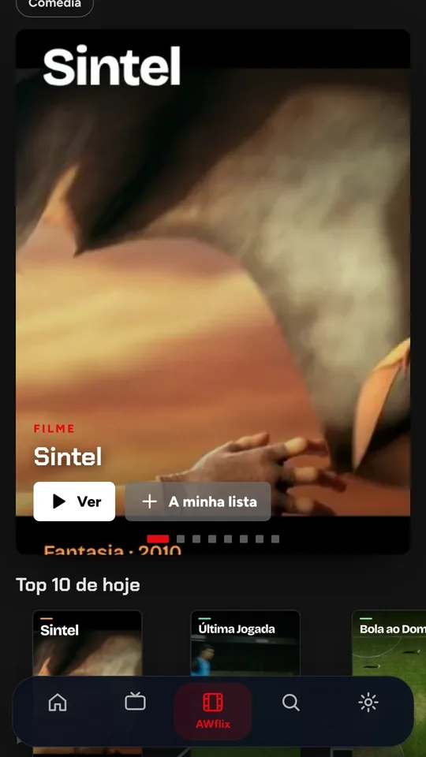
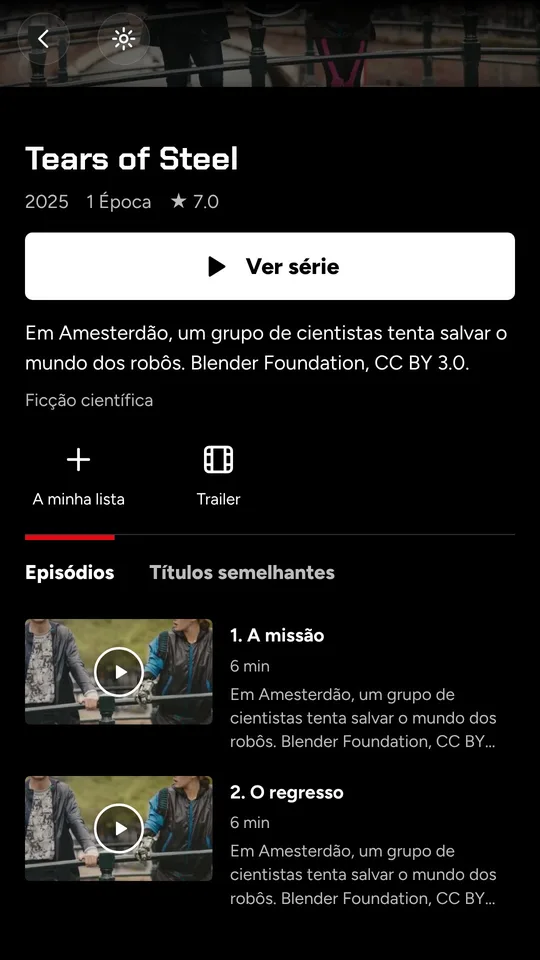
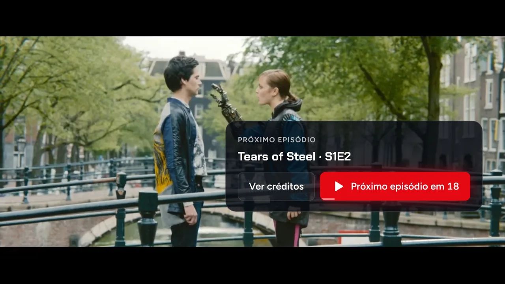
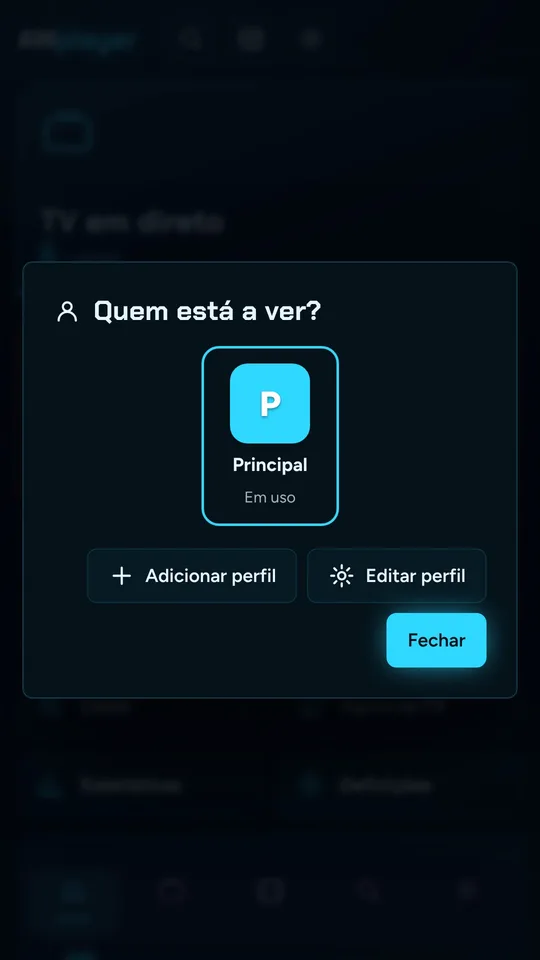
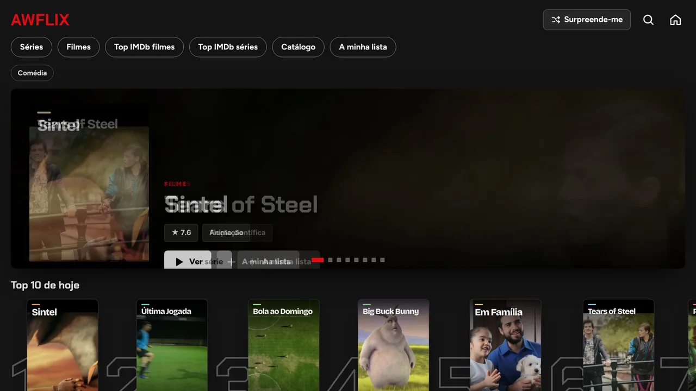

O que faz
Tudo o que a tua lista tem, num sítio só.

TV em direto
Juntas a tua lista (Xtream ou M3U) e os canais aparecem por categorias, com o programa que está a dar e quanto falta para acabar.
- Pré-visualização antes de abrir o canal
- Em ecrã inteiro mudas de canal pelo número, como na televisão
- Se a ligação falhar, o canal volta sozinho
- Favoritos e últimos canais vistos

Multiecrã na Google TV
Guia de TV e multiecrã
O guia mostra o que está a dar em todos os canais e o que vem a seguir. Em dia de jogos, vês até quatro canais ao mesmo tempo e escolhes de qual sai o som.
- Guia com a programação das próximas horas
- Até 4 canais no mesmo ecrã
- Funciona com o comando da Google TV


AWflix: filmes e séries ao estilo Netflix
Os filmes e as séries da tua lista ficam com capas, sinopse, classificação e episódios por temporada, em vez de uma lista de nomes.
- Continuar a ver, onde quer que tenhas parado
- A minha lista e o Top 10 de hoje
- “Surpreende-me” para quando não sabes o que ver

Saltar intro e próximo episódio
O botão “Saltar intro” aparece na altura certa de cada série, e no fim o episódio seguinte começa sozinho. Ou carregas em “Ver créditos” se quiseres ficar.
- Intro e resumo detetados por série
- Legendas automáticas na tua língua
- Som Dolby e DTS quando o aparelho suporta


Perfis, downloads e todos os aparelhos
Cada pessoa da casa tem o seu perfil, com a sua lista e o seu progresso. Antes de uma viagem, descarregas episódios ou séries inteiras, com as legendas que escolheres, e vês sem internet.
- Telemóvel, Google TV e Windows com a mesma conta
- Progresso sincronizado entre aparelhos
- Downloads por episódio, temporada ou série
Preço
Experimenta um dia inteiro. Depois decides.
Experimentar
Todas as funções, sem cartão. Só precisas de entrar com a conta Google.
Mensal
Cancelas quando quiseres, na própria app.
Anual
Dois meses de oferta face ao plano mensal.
Instalar
Escolhe onde vais ver.
Telemóvel Android
- Descarrega o APK (8,4 MB).
- Abre o ficheiro. Se o Android pedir, autoriza instalar apps desta origem.
- Entra com a conta Google e junta a tua lista.
Google TV e Android TV
- Na TV, instala a app Downloader a partir da Play Store.
- No Downloader escreve
awdigital.pt/tve carrega em Go. - Quando o download acabar, carrega em Instalar.
Se a TV pedir, autoriza o Downloader a instalar apps desconhecidas nas definições.
Windows
- Descarrega o instalador (72 MB) e abre-o.
- Se aparecer “O Windows protegeu o PC”, carrega em Mais informações e depois em Executar mesmo assim.
- O AWplayer fica no menu Iniciar.
Perguntas
Antes de descarregares
O AWplayer traz canais?
Não. O AWplayer é um leitor: não vende nem inclui canais, filmes ou séries. Usas a lista IPTV que já tens, de um fornecedor legal, em formato Xtream ou M3U.
Porque preciso de entrar com a conta Google?
É a tua conta no AWplayer: guarda a subscrição, os perfis e o progresso, e sincroniza tudo entre o telemóvel, a TV e o PC. As tuas listas e logins de IPTV ficam no aparelho.
Em quantos aparelhos posso usar?
Até 3 aparelhos por conta, com 2 a ver ao mesmo tempo. Podes trocar de aparelho nas definições da conta, dentro da app.
Como cancelo a subscrição?
Na app, em Definições, Conta, Gerir subscrição. O acesso continua até ao fim do período que já pagaste.
Dá para ver sem internet?
Sim, nos filmes e séries. No Android descarregas um episódio, uma temporada ou a série toda, e escolhes as legendas que vão junto. Os canais em direto precisam sempre de internet.
Encontrei um problema. Como aviso?
Em Definições há o botão “Reportar um problema”. A mensagem chega-me diretamente, com a versão da app e o aparelho, para eu resolver depressa. Nunca são enviados os links ou os logins das tuas listas.